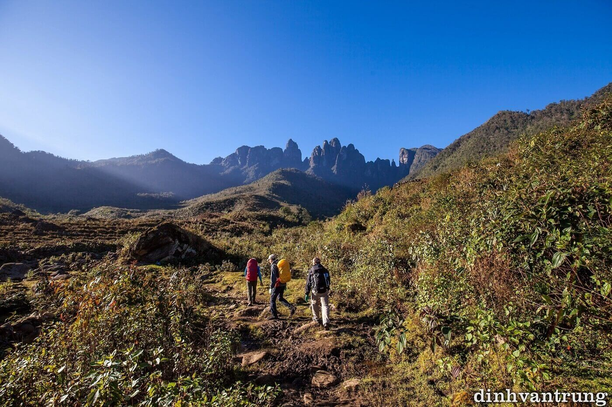
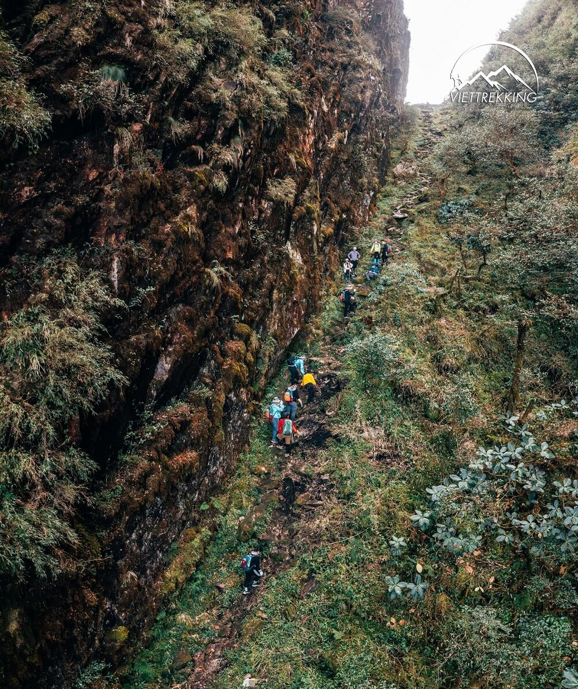
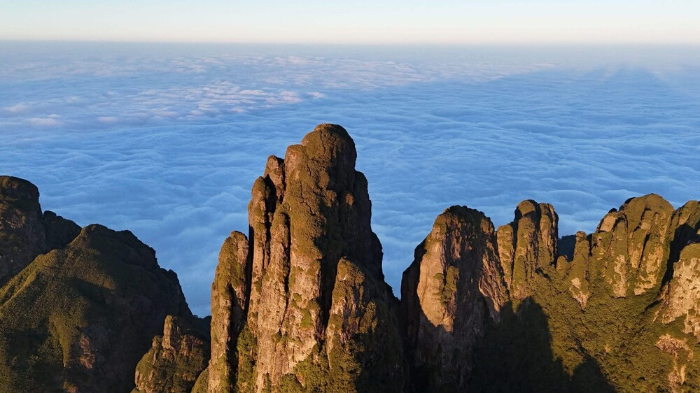

Ngũ Chỉ Sơn (2.858m) được mệnh danh là ngọn núi hùng vĩ và kiêu hãnh bậc nhất Tây Bắc, tọa lạc tại xã Tả Giàng Phình, thị xã Sa Pa, tỉnh Lào Cai. Sở dĩ có tên gọi này là bởi ngọn núi có 5 đỉnh thẳng đứng hướng lên trời xanh giống như 5 ngón tay khổng lồ, sừng sững giữa đại ngàn vây quanh bởi mây ngàn gió núi.
Hành trình chinh phục Ngũ Chỉ Sơn là một trải nghiệm trekking đầy phấn khích và thử thách. Bạn sẽ vượt qua những vách đá dựng đứng, trải nghiệm cảm giác leo những chiếc thang gỗ cheo leo, băng qua những khu rừng trúc rậm rạp và rừng đỗ quyên cổ thụ. Phần thưởng xứng đáng là cái chạm tay vào chóp inox trên đỉnh cao, nơi bạn có góc nhìn panorama 360 độ ôm trọn dãy Hoàng Liên Sơn, đỉnh Fansipan hùng vĩ và biển mây cuồn cuộn chảy qua các khe núi.
Tour ghép khởi hành cuối tuần. Liên hệ Hidden Path để nhận lịch cụ thể từng tuần.
Đặc điểm nổi bật
Bao gồm & Không bao gồm
✓ Bao gồm
- Xe giường nằm đưa đón khứ hồi Hà Nội – Sa Pa – Hà Nội
- Xe trung chuyển từ trung tâm Sa Pa đến điểm trek Tả Giàng Phình
- Hướng dẫn viên chuyên nghiệp, giàu kinh nghiệm leo núi dốc vách đá
- Porter địa phương hỗ trợ mang vác thực phẩm và đồ dùng chung
- Toàn bộ các bữa ăn tiêu chuẩn, giàu dinh dưỡng suốt tuyến
- Chỗ ngủ tại lán gỗ ấm áp, trang bị đủ chăn ấm và thảm cách nhiệt
- Gậy leo núi chuyên dụng, nước uống tiêu chuẩn hàng ngày
- Huy chương chứng nhận chinh phục đỉnh Ngũ Chỉ Sơn kiêu hãnh
✗ Không bao gồm
- Chi phí cá nhân và mua sắm ngoài chương trình
- Nước ngọt, bia rượu và đồ ăn vặt cá nhân
- Giày leo núi và trang phục cá nhân chuyên dụng
- Chi phí tắm lá thuốc Dao Đỏ sau khi xuống núi
- Bảo hiểm du lịch cá nhân
Lịch trình tour chinh phục Ngũ Chỉ Sơn
22h00: Xe giường nằm cao cấp của Hidden Path đón quý khách tại điểm hẹn trung tâm Hà Nội. Trưởng đoàn phổ biến các lưu ý quan trọng về cung đường leo vách đá của Ngũ Chỉ Sơn và kiểm tra lại giày dép, trang bị của các thành viên. Quý khách nghỉ đêm trên xe giường nằm thoải mái.
Bữa ăn: Không. (Quý khách vui lòng tự túc ăn tối trước khi lên xe).
Nghỉ đêm: Ngủ đêm trên xe giường nằm êm ái.
05h00: Xe đến trung tâm thị xã Sa Pa trong làn sương mờ. Đoàn di chuyển về văn phòng làm vệ sinh cá nhân, gửi lại những đồ đạc không cần thiết và dùng bữa sáng nóng hổi với phở vùng cao.
07h30: Xe trung chuyển đưa đoàn đi qua những cung đường đèo quanh co, ngắm thung lũng thơ mộng để đến xã Tả Giàng Phình – điểm xuất phát trekking. Đoàn gặp gỡ các anh em Porter người Mông địa phương, nhận gậy leo núi và khởi động.
08h30: Bắt đầu hành trình. Chặng đầu tiên đoàn đi qua các nương rẫy của người dân, những con suối nhỏ trong vắt trước khi tiến vào vùng rừng già rợp bóng. Đường đi bắt đầu có độ dốc tăng dần, đòi hỏi sự tập trung di chuyển.
12h00: Nghỉ chân bên một khoảng rừng thoáng, thưởng thức bữa trưa dã ngoại mát lành để tiếp thêm thể lực.
16h00: Đoàn chạm chân đến lán nghỉ ở độ cao khoảng 2.200m. Lán gỗ nằm nép mình bên vách đá kín gió. Quý khách nhận chỗ nghỉ, thay đồ khô giữ ấm và tự do ngắm nhìn ánh hoàng hôn buông xuống, nhuộm vàng cả biển mây mờ ảo phía xa.
18h30: Thưởng thức bữa tối ấm cúng với lẩu gà đồi hoặc các món nướng mang hương vị thảo mộc Tây Bắc do Porter chuẩn bị. Cả đoàn giao lưu trò chuyện và nghỉ ngơi sớm để chuẩn bị cho chặng leo dốc quyết định ngày mai.
Bữa ăn: Sáng, Trưa, Tối.
Nghỉ đêm: Ngủ đêm tại lán gỗ tập thể (có chăn và thảm cách nhiệt dày dặn).
05h00: Cả đoàn thức dậy đón cái lạnh se se của núi rừng, dùng bữa sáng nhẹ nhàng và uống tách trà/cà phê nóng ấm. Mọi người để lại đồ đạc lớn tại lán, chỉ mang theo nước và đồ cá nhân nhỏ gọn.
06h00: Bắt đầu chặng leo đỉnh thử thách nhất. Càng lên cao độ dốc càng lớn, đoàn sẽ trải nghiệm vượt qua các vách đá đứng bằng hệ thống thang gỗ chắc chắn do người dân bản địa dựng và bám dây bảo hiểm. Cảm giác chinh phục cực kỳ kích thích đối với các trekker.
08h30: Chiến thắng đỉnh Ngũ Chỉ Sơn ở độ cao 2.858m! Đứng từ "ngón tay" cao nhất, bạn sẽ vỡ òa trước cảnh tượng biển mây trắng muốt cuồn cuộn như thác đổ, phóng tầm mắt ngắm nhìn đỉnh Fansipan ngạo nghễ phía đối diện. Đoàn chụp ảnh check-in và nhận huy chương vinh danh.
10h30: Đoàn cẩn trọng di chuyển theo đường cũ xuống núi, hạ độ cao quay trở lại lán nghỉ.
13h00: Về tới lán, mọi người ăn trưa, thu dọn hành lý cá nhân. Chiều nay đoàn sẽ nghỉ ngơi thư giãn tại khu vực lán, tận hưởng không khí trong lành, chụp những góc ảnh rừng trúc lãng mạn hoặc dạo chơi quanh các vách đá ngắm hoàng hôn ngày thứ hai đầy thư thái thay vì xuống núi vội vã.
18h30: Bữa tiệc tối liên hoan tại lán ấm áp, cùng nâng ly chúc mừng cả đoàn đã vượt qua thử thách vách đá thành công, an toàn.
Bữa ăn: Sáng, Trưa, Tối.
Nghỉ đêm: Ngủ đêm tại lán gỗ giữa đại ngàn.
06h30: Thức dậy đón ánh bình minh rực rỡ, đoàn dùng bữa sáng lót dạ, uống trà và thu dọn đồ đạc để bắt đầu hành trình hạ sơn hướng về bản Tả Giàng Phình. Đường xuống dốc thoai thoải giúp bước chân mọi người nhẹ nhàng hơn.
11h00: Về tới chân núi, xe trung chuyển đón đoàn quay trở lại trung tâm thị xã Sa Pa.
12h30: Đến Sa Pa, đoàn thưởng thức bữa trưa liên hoan tổng kết tour với đại tiệc lẩu cá hồi, cá tầm đặc sản tươi ngon. Sau bữa trưa, quý khách có thể tự túc trải nghiệm dịch vụ tắm lá thuốc người Dao Đỏ để hồi phục cơ bắp hoàn toàn.
16h00: Quý khách lên xe giường nằm cao cấp khởi hành trở về thủ đô Hà Nội. Bạn có thể thoải mái ngủ nghỉ ngơi hoặc ngắm nhìn lại những khoảnh khắc vượt vách đá ngoạn mục trên điện thoại.
22h30: Xe về đến điểm hẹn ban đầu tại Hà Nội. Hướng dẫn viên Hidden Path chia tay đoàn, gửi lời cảm ơn và hẹn gặp lại các trekker trong những cung đường thử thách tiếp theo!
Bữa ăn: Sáng, Trưa.
Độ khó
Tour leo núi Ngũ Chỉ Sơn được đánh giá ở mức Thách thức (4/5) – Đây là một trong những cung trekking có độ dốc đứng cao nhất Việt Nam, nhiều đoạn phải leo vách đá và thang gỗ thẳng đứng. Tour này không phù hợp với những người sợ độ cao hoặc người mới leo núi lần đầu; đòi hỏi thành viên phải có thể lực dẻo dai, thăng bằng tốt và có kinh nghiệm trekking trước đó.
Chuẩn bị trước tour
Thư viện ảnh


